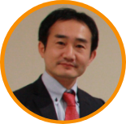

| 開催者挨拶

小村俊平
ベネッセ教育総合研究所
主席研究員
岡山大学学長特別補佐
ベネッセSTEAMフェスタは、全国の学校から中学生や高校生が集まり、各分野の専門家や企業人と対話し、交流する場です。
生徒の皆さんは、他の地域で生活し、学校に通う同世代に出会い、大きな刺激を受けるでしょう。
また、専門家との交流を通じて、これから学びたいテーマが見つかったり、研究を深めるためのアドバイスを得られるかもしれません。
大人の皆さんは、中高生の斬新な発想に驚いたり、真剣な取り組みに心を打たれるかもしれません。
フェスタは、世代や分野や立場を越えて多様な人々が出会い、互いに学びあう場であり、参加者全員で作り上げていく場です。
そこに「お客様」はいません。多様互いに触発しあい、一人ひとりが新しい何かを生み出すことをフェスタはめざしています。
ぜひこの場を通じて皆でこれからのSTEAMの学びをつくりあげていきましょう。
| サポーター一覧
ベネッセSTEAMフェスタは、三つのことを大切にしています。
第一に、中高生と社会人、学習者と専門家など、多様な人がフラットに参加する場であり、中高生だけでなく、
参加者全員が学ぶ場としてデザインすることです。
第二に、アカデミック、ソーシャル、メーカーズの各分野が交流し、新しい価値を生み出す場としてデザインすることです。
第三に、「学んだ結果に対する報酬」ではなく、「各自の実践や研究を発展させるための機会」を得られる場にすることです。
フェスタはこの3つに共感する挑戦者が集まり、大きなうねりを生み出していく場です。多くの方の参加を楽しみにしています。
横井篤文
岡山大学副学長（特命
（海外戦略）担当）/
ユネスコ
（国連教育化学文化機関）
チェアホルダー/一般社団法人
One Young World
Japan Committee
ベネッセSTEAMフェスタは、三つのことを大切にしています。
第一に、中高生と社会人、学習者と専門家など、多様な人がフラットに参加する場であり、中高生だけでなく、
参加者全員が学ぶ場としてデザインすることです。
第二に、アカデミック、ソーシャル、メーカーズの各分野が交流し、新しい価値を生み出す場としてデザインすることです。
第三に、「学んだ結果に対する報酬」ではなく、「各自の実践や研究を発展させるための機会」を得られる場にすることです。
フェスタはこの3つに共感する挑戦者が集まり、大きなうねりを生み出していく場です。多くの方の参加を楽しみにしています。
横井篤文
岡山大学副学長（特命
（海外戦略）担当）/
ユネスコ
（国連教育化学文化機関）
チェアホルダー/一般社団法人
One Young World
Japan Committee